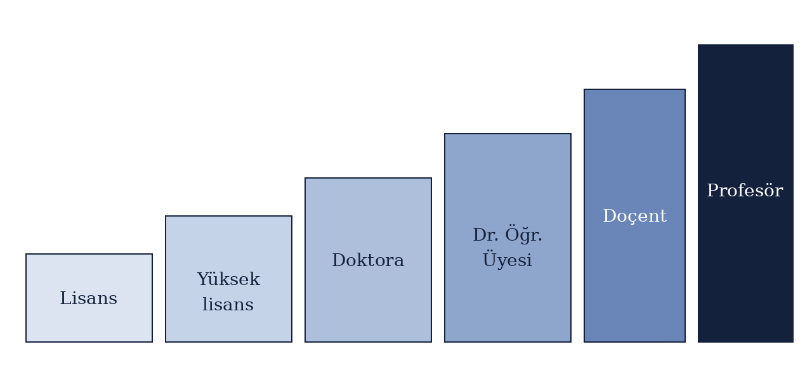

Yazar: Emirhan Tokuşlu -- 11 Ekim 2026
Bu makalede Türkiye'de akademisyen olmak isteyen bir öğrencinin izlemesi gereken temel basamaklar ele alınmaktadır. Lisans eğitiminden profesörlüğe uzanan süreç aşama aşama anlatılmış, her aşamada nelere dikkat edilmesi gerektiği özetlenmiştir.
Akademisyenlik, yalnızca ders vermekten ibaret değildir. Bir akademisyen aynı anda
öğretir, araştırır ve bilgi üretir.
Bu nedenle mesleğe giden yol da hem uzun hem de sabır isteyen bir yoldur.
Türkiye'de üniversitelerdeki kadrolar ve unvanlar Yükseköğretim Kanunu ile
belirlenir; ayrıntılar zaman zaman değişebildiği için güncel mevzuatı mutlaka
kontrol etmek gerekir.

Şekil 1: Türkiye'de akademik kariyer basamakları.
Akademik kariyer belirli bir sırayı izler. Her basamak bir öncekini tamamlamayı gerektirdiği için süreç aşağıdaki gibi sıralanabilir:
Her şey iyi bir lisans başarısıyla başlar. Yüksek not ortalaması, yabancı dil bilgisi ve alana duyulan gerçek bir ilgi, lisansüstü başvurularında öne çıkmayı sağlar. Yüksek lisans ise öğrencinin ilk kez kendi başına bir tez hazırladığı, bilimsel kaynak taramayı ve akademik yazım kurallarını öğrendiği dönemdir.
Doktora, özgün bir araştırma yapılıp sonuçların tezle ortaya konduğu aşamadır. Doktora programlarına başvururken genellikle ALES ve yabancı dil puanı istenir. Gerekli puanlar üniversiteye ve programa göre farklılık gösterdiğinden, başvurulacak programın güncel ilanı dikkatle okunmalıdır.
Pek çok kişi bu süreci üniversitede araştırma görevlisi olarak çalışarak yürütür. Böylece hem gelir elde eder hem de akademik ortamın içinde tecrübe kazanır. Araştırma görevlisi kadroları, üniversitelerin yayımladığı ilanlarla duyurulur.
Doktorasını tamamlayan kişiler, açılan ilanlara başvurarak Doktor Öğretim Üyesi kadrosuna atanabilir. Bu aşamadan itibaren kişi artık bağımsız araştırmacı ve öğretim üyesi olarak çalışmaya başlar.
Doçentlik, Üniversitelerarası Kurul (ÜAK) tarafından yürütülen bir değerlendirme sürecidir. Adayların belirli bir yayın, atıf ve yabancı dil şartını sağlaması beklenir. Güncel şartlar için ÜAK'ın resmî internet sitesi incelenmelidir. Doçentlik unvanını aldıktan sonra belirli bir süre çalışan ve gerekli koşulları sağlayan öğretim üyeleri ise profesörlük kadrosuna başvurabilir.
Yukarıdaki basamaklar bir yol haritası sunsa da, bu yolda ilerlemeyi kolaylaştıran bazı alışkanlıklar vardır. Bunlar belirli bir sıraya bağlı olmadığı için her aşamada işe yarar:
Türkiye'de akademisyen olmak; lisanstan başlayıp doktora, doçentlik ve profesörlüğe uzanan çok yıllı bir süreçtir. Bu süreçte sabır, disiplin ve sürekli öğrenme isteği en önemli güçlerdir. Doğru planlama ve düzenli çalışma ile bu yolda ilerlemek mümkündür.
Bu sayfa Web Arayüz Tasarımı dersi 4. hafta ödevi için hazırlanmıştır.